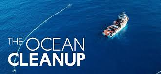

Interactive Tableau Visualization

It is a non-profit organization that develops technologies to remove plastic from the world's oceans
The amount of plastic in the Great Pacific Garbage Patch (GPGP) has increased exponentially since the 1970s
92% of the mass of plastic in the GPGP is in larger objects (>5 mm).
The GPGP contains around 1.8 trillion pieces of plastic, weighing an estimated 100,000 tonnes.
Some of the plastic at the surface of the GPGP is breaking down into microplastics and sinking to the deep sea.
Back to Mission